Movie Buzz
One scary movie for every night of October. Thirty one tapes, rewound and ready. Scroll to press play.
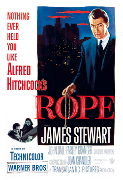
Night 1/31
Rope
Two college friends strangle a classmate, hide the body in a chest, then host a dinner party on top of it. Hitchcock stages the whole thing as a single unbroken evening, and the tension comes from watching their perfect crime unravel one cocktail at a time.
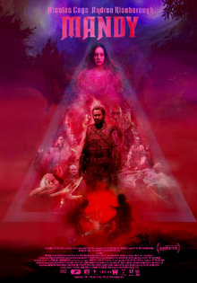
Night 2/31
Mandy
A quiet life in the woods is torn apart by a cult and the biker demons they summon. What follows is a neon soaked, chainsaw wielding revenge trip with Nicolas Cage at full volume. It plays like a heavy metal album cover come to life.
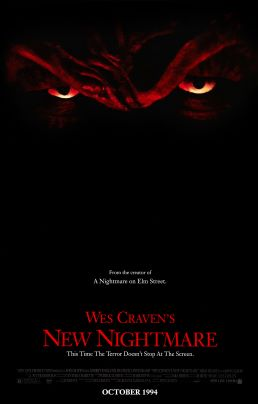
Night 3/31
Wes Craven's New Nightmare
Heather Langenkamp plays herself as Freddy crosses out of the films and into the real world. Craven turned his own franchise inside out two years before Scream, and the result is smarter and scarier than any of the sequels.
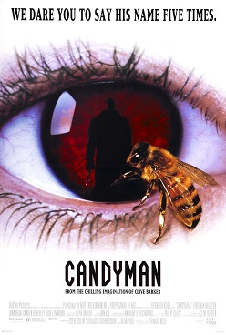
Night 4/31
Candyman
A grad student researching urban legends says his name five times in the mirror. Tony Todd's hook handed spirit haunts Chicago's Cabrini Green in a film that is as much about race and myth as it is about bees and blood. Philip Glass wrote the score.
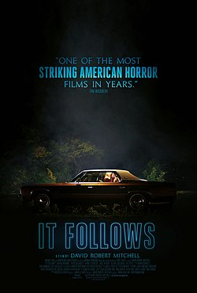
Night 5/31
It Follows
After one night with a new boyfriend, Jay is stalked by something only she can see. It walks. It never stops. The synth score and suburban Detroit setting make every wide shot a game of spot the shape in the background.
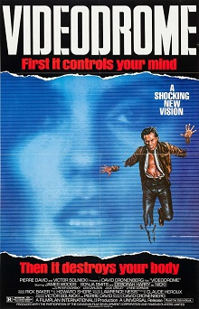
Night 6/31
Videodrome
A sleazy cable TV exec discovers a pirate broadcast of torture that rewires his brain and his body. Cronenberg's hallucinatory media nightmare is the most VHS movie ever made. Long live the new flesh.
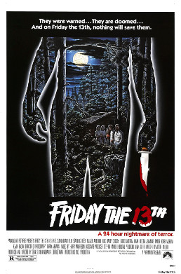
Night 7/31
Friday the 13th
Counselors reopen Camp Crystal Lake and get picked off one by one. The original is a scrappy summer camp slasher with Tom Savini effects, a killer twist and the ki ki ki ma ma ma that started it all.
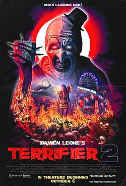
Night 8/31
Terrifier 2
Art the Clown is resurrected on Halloween night and sets his sights on a teenager and her little brother. Relentless, gleefully gory and somehow funny, it is the slasher that sent walkouts to the lobby and fans back for seconds.
Turn off the lights.Week one is over
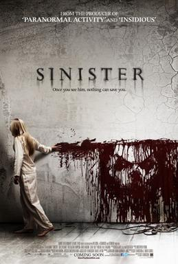
Night 9/31
Sinister
A true crime writer moves his family into a murder house and finds a box of Super 8 home movies in the attic. Each reel is worse than the last. The film within the film footage is some of the most unsettling stuff of the decade.
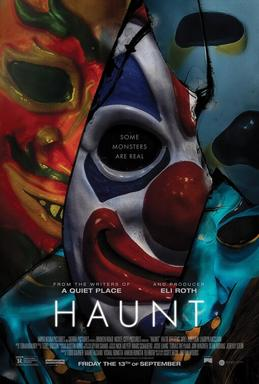
Night 10/31
Haunt
A group of friends visits an extreme haunted house on Halloween and discovers the actors are not acting. Lean, mean and shot like a funhouse ride, it is the perfect pick for a night when you want simple scares that work.

Night 11/31
The Witch
A Puritan family banished from their settlement builds a farm at the edge of the woods. Then the baby vanishes. Eggers' debut is slow burning folk horror in period accurate English, with a goat named Black Phillip who steals the film.
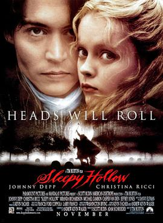
Night 12/31
Sleepy Hollow
Johnny Depp's squeamish constable Ichabod Crane investigates a string of beheadings in a fog drenched colonial village. Burton's Hammer horror valentine is all gothic production design, pumpkin headed scarecrows and a sword swinging Christopher Walken.
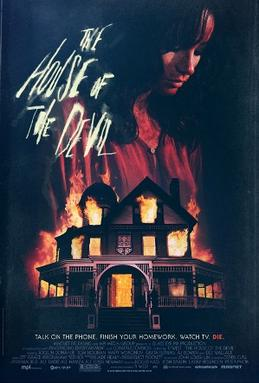
Night 13/31
The House of the Devil
A broke college student takes a babysitting job at a remote house on the night of a lunar eclipse. Shot to look like it was pulled out of a 1983 video store, it spends an hour building dread and then lets it all loose.
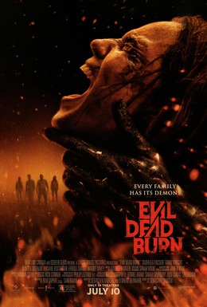
Night 14/31
Evil Dead Burn
A young widow retreats to her in laws' secluded house to grieve, and the family reunion turns into a Deadite outbreak one relative at a time. The sixth Evil Dead film picks up where Rise left off and brings the series back to a single house full of people who cannot leave.
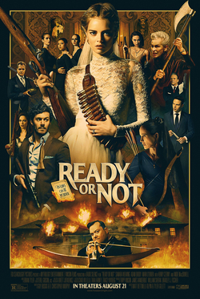
Night 15/31
Ready or Not
On her wedding night, Grace learns her new in laws play a game with every addition to the family. She draws hide and seek. Samara Weaving in a shredded wedding dress with a shotgun is the whole pitch, and it delivers.
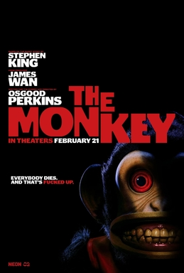
Night 16/31
The Monkey
Twin brothers find a wind up toy monkey in their father's closet. Every time it beats its drum, someone nearby dies in a spectacularly stupid way. Perkins turns a Stephen King short into a pitch black comedy about not being able to outrun death.
Don't answer the phone.Halfway there
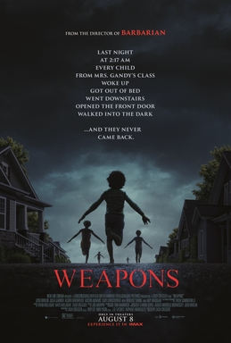
Night 17/31
Weapons
At 2:17 in the morning, every kid in one classroom walked out of their homes and vanished into the dark. Except one. Cregger's follow up to Barbarian tells the mystery from several points of view and lands on an image you will not shake.
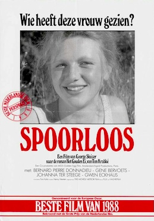
Night 18/31
The Vanishing
A woman disappears from a highway rest stop and her boyfriend spends three years obsessed with finding out what happened. The Dutch original, not the remake. The quiet, methodical villain and the final scene are legendary for a reason.
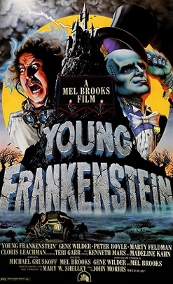
Night 19/31
Young Frankenstein
A palate cleanser. Gene Wilder's Dr. Frankenstein (it's pronounced Fronkensteen) inherits the family castle and picks up the family business. Shot in black and white on the original 1931 lab equipment, it is the funniest horror movie ever made.
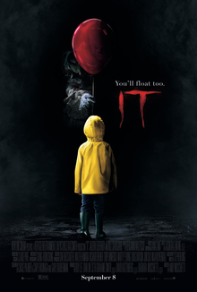
Night 20/31
It
The Losers Club spends the summer of 1989 hunting the thing that lives in the sewers of Derry, Maine. Bill Skarsgård's Pennywise is pure nightmare fuel, and the kids are so good you forget it is a monster movie between scares.
Night 21/31
Undertone
A paranormal podcast host caring for her ailing mother receives a recording she cannot stop listening to. A one location, slow build audio nightmare that proves you do not need to show much when the sound design does the work.
Night 22/31
Hush
A deaf writer living alone in the woods is stalked by a masked man who realizes she cannot hear him coming. Kate Siegel co wrote and stars in a tight 80 minute home invasion thriller that is all nerve.
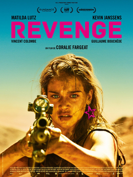
Night 23/31
Revenge
Left for dead in the desert by three men, Jen comes back. Fargeat's sun scorched, candy colored rape revenge thriller is the stylish precursor to The Substance and features one of the great final showdowns, barefoot and covered in blood.
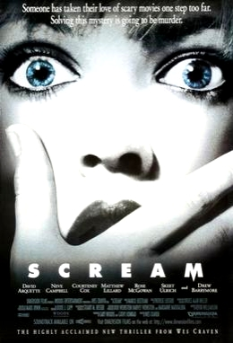
Night 24/31
Scream
Do you like scary movies? A masked killer quizzes Woodsboro teens on horror trivia before gutting them. Craven and Kevin Williamson rewrote the rules of the slasher and still delivered the scares. That opening scene with Drew Barrymore remains perfect.
Don't look behind you.One week left
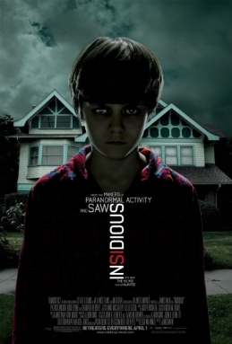
Night 25/31
Insidious
A boy falls into a coma and his family's house fills with things that should not be there. Then they move, and it follows. Wan's haunted house picture introduced The Further, a red faced demon and the Tiny Tim needle drop you will never unhear.
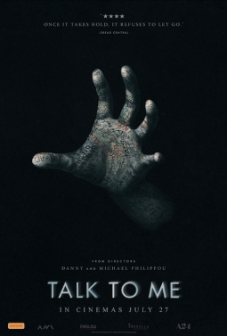
Night 26/31
Talk to Me
Teens pass around an embalmed hand at parties. Grip it, say the words, and a spirit climbs inside you for ninety seconds. Someone holds on too long. The Australian YouTuber brothers made the best possession movie in years.
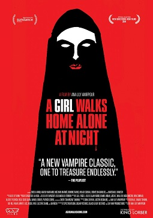
Night 27/31
A Girl Walks Home Alone at Night
In the Iranian ghost town of Bad City, a lonely vampire in a chador skateboards through the night looking for bad men. Black and white, dreamy and cool as hell, it is the first Iranian vampire western and still the only one.
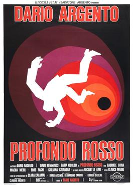
Night 28/31
Deep Red
A jazz pianist witnesses a psychic's murder and becomes an amateur detective. Argento's giallo masterpiece has a Goblin score, a mechanical doll that will ruin your week and a clue hiding in plain sight from the very first scene.
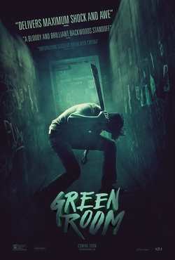
Night 29/31
Green Room
A broke punk band takes a gig at a neo Nazi bar in the Oregon woods, sees something they should not have, and gets barricaded in the green room. Patrick Stewart is the calm, terrifying boss. Brutal and unbearably tense.
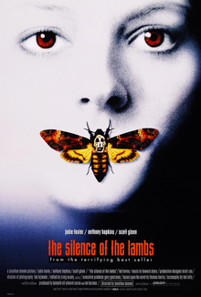
Night 30/31
The Silence of the Lambs
FBI trainee Clarice Starling needs Hannibal Lecter's help to catch a killer who skins his victims. The only horror film to win Best Picture, and it earned it. Every conversation through the glass is a duel.
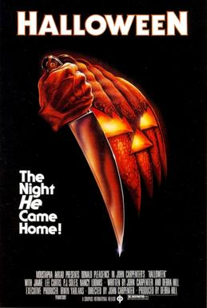
Night 31/31
Halloween
The night he came home. Michael Myers escapes the asylum and returns to Haddonfield to stalk babysitters while Dr. Loomis hunts him. Carpenter's piano theme, the steadicam and that pale mask built the template everything else on this list follows.
Be kind, rewind.